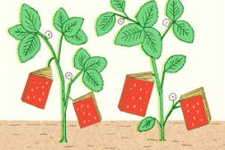
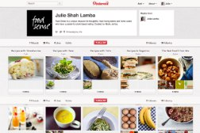

Latest tweet


Sign up for our newsletter to receive a handpicked selection of the best stories, recipes, and news, delivered weekly to your inbox.

2012’s Best Summer Cookbooks
2012’s Best Summer Cookbooks
With the best of the season coming from “orchards, farms and gardens,” NPR has put together an impressive collection of 10 summer cookbooks

How to Make Vegetable Chips
About a month ago, I ate almost an entire box of kale chips. My brother and I were visiting our cousin in Brooklyn, and before a very thoughtfully prepared vegan…

Join us on Pinterest!
Join us on Pinterest!
If I could curate a cookbook for you, this would be it.

Recipes from a Sunday Supper
I could not figure out what to do with the delectable slices of Pear Cake that I brought home from this wonderful Sunday supper - eat them slowly, a little bit at…